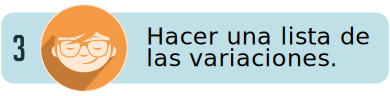
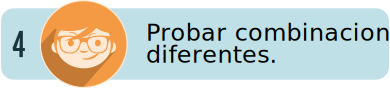

Introducción
1. Introducción
Se habla mucho de la creatividad y es un concepto de moda en muchas áreas; desde la superación personal con el concepto de coaching, pasando por la creación de nuevos emprendimientos en lo que hoy se denominan startup, hasta en la investigación científica. Lo cierto es que es inherente al ser humano y podría decirse que está presente en ciertos comportamientos de algunos animales, si se remite al concepto estricto de lo que es creatividad, (la solución de problemas)
Existen casos en la naturaleza que evidencian su presencia en algunas especies; por ejemplo: el ave martín pescador atrapa peces poniendo como carnada frutas o pequeños insectos que consume su presa. El buitre-águila barbado, un ave carroñera que se eleva a una altura considerable para dejar caer huesos en zonas rocosas y de esta forma extraer la médula que es su alimento favorito por la alta concentración de proteína y grasas.

1.2 Definiciones de creatividad
El sustantivo creatividad procede etimológicamente de la palabra creare, evoluciona hacia criar y llega a la actualidad derivada del verbo crear. La primera utilización escrita del término en inglés data de 1875 cuando Ward califica sin definir la aptitud de Shakespeare con la acepción «creatividad poética». La primera definición del concepto aparece en el año 1961, en el Webster’s Third Dictionary como «habilidad de crear».
En el diccionario de la Real Academia Española (RAE), se incorpora por primera vez en 1984 como «facultad de crear» y «capacidad de creación». Para la RAE, crear significa en su primera acepción «producir algo de la nada» –como ejemplo se propone «Dios creó los cielos y la tierra»–. En el caso del adjetivo creativo, la RAE lo define como:
Que posee o estimula la capacidad de creación, invención, etc.
Capaz de crear algo.
Profesional encargado de la concepción de una campaña publicitaria.
“No existen individuos carentes de creatividad, solo existen personas más o menos frenadas, calcificadas o aletargadas que requieren un adiestramiento” (Castelló y del Pino, 2019, p.39, basado en Aznar, Ferrer y de Bas,1996).
Las soluciones creativas son fruto de un trabajo previo intenso que incluye el ensayo y el error en pruebas, es producto de aproximaciones y de cambios.
Desde los ámbitos de la psicología y la pedagogía, la investigación científica y las teorías no deterministas han permitido desmitificar la visión de la creatividad como una cualidad casi mística que solo algunos individuos poseen. Autores como Amabile (1983), Golen (1983), Boden (1994), Csikszentmihaly y Colodrón (1999) o Sternberg (2006), entienden la creatividad como una capacidad que puede ser desarrollada y que, en consecuencia, puede ser estimulada y enseñada, haciendo especial hincapié en la importancia de la actitud, la motivación y las características del entorno del individuo –el contexto social, cultural, educativo, histórico, etc.– Maslow (1985) consideraba la creatividad como una habilidad deseable en cualquier campo profesional. (Castelló y del Pino, 2019, p.39)

En el ámbito de la publicidad y la comunicación, la creatividad se hace necesaria e indispensable, ya que los anunciantes están siempre en la búsqueda de agencias o publicistas que realicen para ellos anuncios que marquen la diferencia y den un toque de originalidad y diferenciación a sus productos frente a la competencia. Sin embargo, en la realización publicitaria la creatividad tiene cabida en todos los frentes: medios, estrategias, redacción de textos, creación de imágenes, merchandising y promoción de ventas.
1.3. El proceso creativoEl proceso creativo implica varios aspectos:
Fluidez: esta característica se refiere a la generación copiosa y rápida de ideas; para el desarrollo de una gran idea es necesario tener cientos de ellas.
Flexibilidad: el desarrollo creativo implica el poder de la adaptación, las ideas pueden llegar desde cualquier dirección y es necesario tener la capacidad de tomar una alternativa y convertirla en solución. La flexibilidad implica también el rechazo de ideas valiosas que por una u otras circunstancias pierden aplicabilidad. El creativo debe ser flexible para poder adaptar cualquiera de ellas de la forma más adecuada posible para generar soluciones eficientes.
Originalidad: la originalidad no se refiere necesariamente a que algo es único o irrepetible, las ideas originales pueden darse también a través de la forma como se llevan a cabo o se presentan, aquí es donde se hace presente el pensamiento lateral; es decir, pensar de una forma un poco diferente de lo que pensaría el común de la gente, entendido como la realización de acciones con otras versiones diferentes.
Ejecución: en ocasiones, el llevar a cabo una idea es más complejo que plantearla; por ello, el creativo debe ser también un realizador de ella y saber acudir a los recursos disponibles para llevarla a cabo. Muchas veces es en su ejecución, en donde esta se convierte en grande y es en ese momento, donde el profesional debe tener la capacidad de tomar cualquier idea, transformarla, mejorarla y generar con ella soluciones innovadoras.
Para llevar a cabo el proceso creativo, es importante contar con toda la información posible del problema que se busca solucionar, así como tener claro que la creatividad no es un chispazo que llega de la nada generando ideas asombrosas; por el contrario, implica un diagnóstico previo de las situaciones para las que se están generando ideas, ya que suena imposible pensar en algo que no se conoce o de lo que no se sabe nada. Es por esto por lo que, en campos como la publicidad, el diseño o la producción audiovisual, el primer paso para el desarrollo creativo sea el brief.
Para el desarrollo de la creatividad, no hay una fórmula mágica, porque no todas las personas piensan de la misma manera, pues para algunas es más efectivo meditar, para otros caminar y para otros tomar notas y hacer dibujos o mamarrachos en una hoja; lo cierto, es que todas las personas son creativas, la diferencia radica en que algunas tienen ideas constantemente y las llevan a cabo.
A continuación, se verán algunos de los métodos más populares para el proceso creativo y la forma como se llevan a cabo. Se relacionan, sobre todo, los más utilizados en el desarrollo de estrategias de comunicación y publicidad:
1.3.1. Técnicas creativas
Las técnicas creativas implican el desarrollo de métodos que permiten ver las situaciones desde diferentes aspectos. Para la mayoría de las personas es complicado pensar lateralmente; es decir, salir de lo convencional y proponer soluciones prácticas, pero no comunes. Estas técnicas incentivan el pensamiento disruptivo, la creación de nuevas ideas, el mejoramiento de las ya existentes o la adecuación de soluciones anteriores a problemas actuales.
A continuación, se indican las técnicas más utilizadas para estimular la producción de ideas y su evaluación, de acuerdo con los descrito por la Fundación Neuronilla para la Creatividad y la Innovación (2020)
1.3.1.1 Lluvia de ideas o Brainstorming:

1.3.1.2 Análisis morfológico
Es una de las técnicas más valiosas para generar gran cantidad de ideas en un corto período de tiempo y se desarrolló en los trabajos tecnológicos de la astrofísica y las investigaciones espaciales llevadas a cabo en los años cuarenta, como resultado de los adelantos del astrónomo Fritz Zwicky.
Es una técnica combinatoria de ideación creativa consistente en descomponer un concepto o problema en sus elementos esenciales o estructuras básicas. Con sus rasgos o atributos se construye una matriz que nos permitirá multiplicar las relaciones entre tales partes. Así pues, en su forma más básica, el análisis morfológico no es más que la generación de ideas por medio de una matriz. Se realiza llevando a cabo los siguientes pasos:
 |
Para determinar si un parámetro es lo suficientemente importante para añadirlo, hay que preguntarse: “¿Seguiría existiendo el problema sin el parámetro que estoy pensando para la matriz?” |
 |
Debajo de cada parámetro hay que relacionar tantas variaciones como se deseen. El número y variaciones determinará la complejidad de la matriz. Generalmente, es más fácil encontrar ideas nuevas dentro de un marco sencillo que de uno complejo. Por ejemplo, una matriz con diez parámetros, cada uno de los cuales tienen diez variaciones y produce 10.000 millones de combinaciones potenciales. |
|  |
Cuando la matriz esté terminada, hay que hacer recorridos al azar a través de los parámetros y variaciones, seleccionando uno o más de cada columna y luego combinarlos de formas completamente nuevas. Se pueden examinar todas las combinaciones de la matriz para ver la manera en que afectan al problema. Si se está trabajando con una que contiene diez o más parámetros, puede que sea útil examinar toda la matriz al azar y luego ir restringiéndose gradualmente a porciones que padezcan especialmente fructíferas. Es una técnica muy adecuada para generar ideas en un trabajo exploratorio, pero también se distingue por su complejidad para realizarla. Es muy apropiada para: |
|  |
Nuevos productos, servicios o modificaciones a los que ya existen. Aplicaciones para nuevos materiales. Nuevos segmentos del mercado. Nuevas formas de desarrollar una ventaja competitiva. Nuevas técnicas promocionales para productos y servicios. Identificación de oportunidades para la localización de nuevas unidades empresariales. |
Matriz ejemplo:
Una empresa de lácteos está buscando realizar un nuevo proceso de promoción para su nueva leche saborizada con vitaminas dirigida a adultos mayores:
Tabla 1 - Matriz ejemplo combinaciones diferentes, análisis morfológico
Fuente: Fundación Neuronilla para la Creatividad y la Innovación (2021)
1.3.1.3 Analogías
Consiste en resolver un problema mediante un rodeo: en vez de atacarlo de frente se compara ese problema o situación con otra cosa. Gordon, creador de la Sinéctica (método creativo basado en el uso de las analogías) insistía en que “se trata de poner en paralelo mediante este mecanismo unos hechos, unos conocimientos o unas disciplinas distintas”. Por ejemplo, un problema empresarial lo intentamos resolver buscando algún problema análogo en otras disciplinas: en la biología, en la historia, en un deporte colectivo, etc.
1.3.1.3 Analogías
Consiste en resolver un problema mediante un rodeo: en vez de atacarlo de frente se compara ese problema o situación con otra cosa. Gordon, creador de la Sinéctica (método creativo basado en el uso de las analogías) insistía en que “se trata de poner en paralelo mediante este mecanismo unos hechos, unos conocimientos o unas disciplinas distintas”. Por ejemplo, un problema empresarial lo intentamos resolver buscando algún problema análogo en otras disciplinas: en la biología, en la historia, en un deporte colectivo, etc.
Se realiza de la siguiente forma:
1. Saber cual es el problema.
Ejemplo: fabricar una bañera que ocupe el menor espacio posible.
2. Generación de las ideas.
Esta segunda fase es la de alejamiento del problema con la imaginación. Es la fase imaginativa y producimos analogías, circunstancias comparables.
El grupo ha propuesto como analogías la cascada, el ciclón, el molino de agua, etc.
3. Selección de las ideas.
La tercera fase es la de seleccionar: tenemos una larga lista de analogías y es el momento de seleccionar las que consideremos más adecuadas y cruzarlas con el problema.

Intersección:
“Se necesita un ciclón a domicilio… una tromba de agua… vertical… las paredes serán cilindros que encajan… cuando no nos servimos de ella, formará un asiento o un elemento decorativo…en servicio será un cilindro…y los chorros de agua partirán del suelo o de las paredes y reconstruirán nuestro ciclón…”
1.3.1.4 Conexiones morfológicas forzadas

Es una propuesta de Koberg y Bagnall que en realidad es la suma de los principios básicos de dos técnicas: el “Listado de Atributos” creado por R. P. Crawford y las “Relaciones Forzadas” de Charles S. Whiting.
Es muy potente porque en una primera fase facilita que surjan ideas sobre aspectos que no habíamos tenido en cuenta y en la segunda provoca analogías muy inspiradoras.
Para realizar esta técnica es necesario seguir los siguientes pasos:
1.3.1.5 El arte de preguntar
Alex Osborn, experto en creatividad y creador del Brainstorming, afirmaba que “la pregunta es la más creativa de las conductas humanas”. Osborn desarrolló una serie de preguntas para el Brainstorming que pueden aplicarse en la exploración del problema.
Este es un conjunto fundamental de preguntas que se usan para formular en el problema todos los enfoques que sean posibles y, así, abrir la perspectiva que tenemos del problema. También son útiles para la percepción de nuevos usos, aplicaciones o posibilidades de un producto o un servicio.
|
h1 Listado de preguntas: ¿Cuándo? ¿Qué clase de? ¿Con qué? ¿Por qué? ¿Cuáles? ¿En qué? ¿Qué? ¿Para cuál? ¿Acerca de qué? ¿Por medio de qué? ¿Con quién? ¿De qué? ¿Qué clase de? ¿De dónde? ¿Hacia dónde? ¿Para qué? ¿Por qué causa? ¿Por cuánto tiempo? ¿A quién? ¿De quién? ¿Más? ¿Para quién? ¿Cómo? ¿Más a menudo? ¿Quién? ¿En qué medida? ¿Menos? ¿Todos? ¿Cuánto? ¿No todos? ¿A qué distancia? ¿Para qué? ¿Importante? ¿Dónde? ¿De dónde? ¿Otra vez? ¿En qué otro lugar? ¿Más difícil? ¿Cuántas veces? |
Ejemplo: la motivación de los trabajadores. ¿Cómo incrementarla? el Planteamiento del problema: exploración.
Preguntas para plantear:
¿Cuándo están motivados los trabajadores?
¿Por qué aumenta su motivación?
¿Por cuánto tiempo están motivados?
¿Con quién incrementan la motivación?
¿Todos se motivan?
¿Por medio de qué se motivan?
Tras el planteamiento de estas preguntas y sus correspondientes respuestas, la visión del problema es más abierta. Tenemos más perspectivas para abordarlo y pasar a la etapa de generación de ideas.
1.3.1.6 Listas cruzadas
Consiste en hallar ideas confrontando elementos lejanos entre sí, desde el punto de vista morfológico, sintáctico o utilitario para generar nuevas funciones, formas e ideas.
Para el desarrollo de esta actividad de ejemplo, se requieren 3 columnas para realizar la misma cantidad de listados diferentes:
En la primera columna se escriben los números del 0 al 9, frente a cada uno vamos a escribir un listado de elementos o cosas relacionadas con el problema en cuestión.
En la segunda columna debemos escribir un nuevo listado del 0 al 9 y frente a cada número acciones o verbos al azar.
En la tercera columna se deben escribir 10 números del 01 al 99 con el fin de cruzar los elementos de las columnas 1 y 2.
Las combinaciones de números de la columna 3 generan combinaciones para el desarrollo de ideas: el 70 por ejemplo es cultura y hablar: en este caso la idea puede ser generar Podcast en los que la revista realice conversatorios cortos de cultura de forma periódica y atraer a un público específico.
La combinación 21 es juegos y comer, en este caso se produce la idea de realizar juegos en línea con preguntas de gastronomía y generar como premio bonos en restaurantes de patrocinadores.
1.3.1.7 Mapas mentales
s una técnica creada por Tony Buzan, investigador en el campo de la inteligencia y presidente de la Brain Foundation.
La importancia de los mapas mentales radica en que son una expresión de una forma de pensamiento: el pensamiento irradiante. El mapa mental es una técnica gráfica que permite acceder al potencial del cerebro.
Su principal aplicación en el proceso creativo es la exploración del problema y la generación de ideas. En la exploración del problema es recomendable su uso para tener distintas perspectivas de este.

Los mapas mentales se pueden mejorar y enriquecer con colores, imágenes, códigos y dimensiones que les añaden interés, belleza e individualidad.
1.3.1.8 SCAMPER
Es una lista de preguntas que estimulan la generación de ideas. Alex Osborn, el creador del Brainstorming, estableció las primeras. Más tarde fueron dispuestas por Bob Eberle en este mnemotécnico:
- S: ¿Sustituir?
- C: ¿Combinar?
- A: ¿Adaptar?
- M: ¿Modificar?
- P: ¿Utilizarlo para otros usos?
- E ¿Eliminar o reducir al mínimo?
- R ¿Reordenar? = ¿Invertir?

1.3.1.9 Evaluación de las ideas
Durante este proceso se han generado respuestas a las preguntas planteadas; muchas de ellas serán ideas que deben ser evaluadas, de acuerdo con unos criterios que pueden ser elaborados por los componentes del grupo o que ya se han establecido con anterioridad.
Actividad didáctica

¡Ponga a prueba su conocimiento!
La siguiente actividad tiene como propósito validar los conocimientos relacionados con el tema Normativa vigente proceso ECCL.
IniciarGlosario
Normatividad:se entiende por normatividad o normativa a las formas institucionales a través de las cuales el comportamiento es configurado socialmente.
Ley:regla o norma establecida por una autoridad superior para regular, de acuerdo con la justicia, algún aspecto de las relaciones sociales.
Decreto:resolución o decisión que toma una persona o un organismo con autoridad para ello.
Resoluciones administrativas:en este sentido, es una orden que pronuncia el responsable de un servicio público. Se trata de una norma cuyo alcance está limitado al contexto del servicio en cuestión y cuyo cumplimiento es obligatorio.
Material complementario
Referencias bibliográficas
Fiduprevisora. Contrato de Fiducia Mercantil No. 145 de 2019https://www.fiduprevisora.com.co/wp-content/uploads/2020/03/Anexo-No-7-CONCERTACI%C3%93N-MODALIDAD-DE-C%C3%81PITA.pdf
Decreto 1142 de 2016. Capítulo 11 del Título 1 de la Parte 2 del Libro 2 del Decreto 1069 de 2015, Decreto Único Reglamentario del Sector Justicia y del Derecho, y se adoptan otras disposicioneshttps://www.fiduprevisora.com.co/wp-content/uploads/2020/03/Anexo-No-7-CONCERTACI%C3%93N-MODALIDAD-DE-C%C3%81PITA.pdf
Decreto 2245 de 2015. Adición capítulo al decreto 1069 de 2015, Único reglamentario del sector Justicia y del derecho en lo relacionado con la prestación del servicio a las personas privadas de la libertad bajo vigilancia INPEChttps://www.minjusticia.gov.co/Portals/0/Ministerio/decreto%20unico/%23%20decretos/13. DECRETO%202245%20DEL%2024%20DE%20NOVIEMBRE%20DE%202015.pdf
Consejo Nacional De Política Económica Y Social República De Colombia Departamento Nacional De Planeación. Documento CONPES 3828 del 19 de Mayo de 2015. Política penitenciaria y carcelaria Colombiahttp://www.politicacriminal.gov.co/Portals/0/documento/CONPES%20Pol%C3%ADtica% 20penitenciaria%20y%20carcelaria%202015.pdf
Fernández, R. (2005). Introducción al Sistema Penitenciario Españolhttps://docplayer.es/7900389-Introduccion-al-sistema-penitenciario-espanol-1-autor-rafael-fernandez-cubero.html
Ley 1709 de 2014. Se reforman algunos artículos de la Ley 65 de 1993, de la Ley 599 de 2000, de la Ley 55 de 1985 y se dictan otras disposicioneshttp://www.suin-juriscol.gov.co/viewDocument.asp?ruta=Leyes/1686959
USPEC. Manual técnico para la prestación del servicio de salud a la población privada de la libertad INPEC (2016)https://www.minsalud.gov.co/sites/rid/Lists/BibliotecaDigital/RIDE/INEC/IGUB/uspec-manual-tecnico-administrativo-servicio-salud.pdf
Resolución 5159 de 2015. “Por medio de la cual se adopta el Modelo de Atención en Salud para la población privada de la libertad bajo la custodia y vigilancia del Instituto Nacional Penitenciario y Carcelario – INPEC”. Bogotá, D.C., Ministerio de Salud y Protección Social. 30 de noviembre de 2015.
Sentencia T-035 de 2013. “Acción de tutela interpuesta por Germán Augusto Gómez Valdez contra el Juzgado Tercero de Ejecución de Penas y Medidas de Seguridad de Popayán y otros”. Bogotá, D.C., Magistrado Ponente: Jorge Iván Palacio Palacio. 28 de enero de 2013.
Fotografías y vectores tomados de https://www.shutterstock.com/ y https://www.freepik.es/
Licencia Creative Commons
CC BY-NC-SA
Ver licencia.